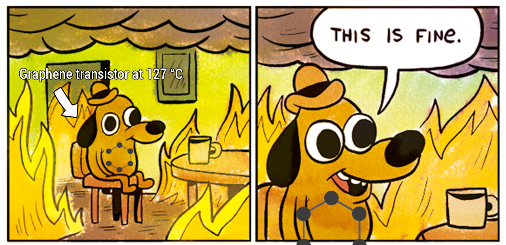

Uses and Applications of Graphene
Navigation: Uses and Applications of Graphene |
Graphene can be used for a variety of applications, such as the ones listed below:
Medical Applications:
Drug Delivery - Graphene has been transformed into a polymer-like substance and manipulated using a magnetic field, meaning that drugs could be delivered inside graphene polymer based capsules and then released upon the shift of a magnetic field to open the capsule.
Electronic Applications:
Transistors - Graphene transistors could vastly outperform current silicon-based transistors in terms of speed, with IBM having constructed transistors capable of reaching speeds in the order of 100 GHz and being unaffected by temperatures as high as 127 °C.
|  |
Graphene transistors have also been manufactured using 3D printing, making the manufacturing process easier and possibly cheaper.
Transistors are used in any device with some form of logic, from a handheld radio to a computer or a smartphone. The advent of higher clock speeds possible with graphene transistors will result in higher performance in devices that we use every day.
Antennae - Antennae made from graphene can theoretically transfer data at speeds up to 100 terabits per second, or around 75000 times faster than the maximum 1.3 Gbps speed of 802.11 ac wifi (i.e. the fastest wireless protocol that is available right now).
Solar Cells - Photovoltaic panels made from graphene have much higher efficiency compared to modern day solar panels.
Supercapacitors - Graphene has a high surface area for mass, and excellent electrical conductivity. For this reason, graphene has been tested for use in supercapacitors, which are energy storage devices much like batteries, but instead of storing chemical energy, capacitors (and supercapacitors) directly store electrical energy.
(To clear up any confusion, a supercapacitor is just a regular capacitor that can hold a bunch more energy than its non-super counterpart. There's some science behind it, but for the purposes of simplicity, we'll skip over that.)
Until recently, capacitors have had far inferior energy densities compared to batteries. However, with the aid of graphene, scientists have been able to achieve energy densities in supercapacitors that rival those of lithium-ion batteries (the kind that are used in modern smartphones). Graphene supercapacitors can have 6 times the energy density of regular supercapacitors and are much easier to manufacture, not requiring extreme temperatures.
So how would this affect you?
Capacitors can charge much quicker than batteries, as they don't have to make the switch between electrical and chemical energy. The practical effect of having a graphene supercapacitor instead of a lithium-ion battery in your phone is that your phone could charge in 5 seconds and run for several hours!
Thermal Management:
Coolant Additives - Graphene's thermal conductivity makes it ideal for putting in liquid coolant and amplifying the thermal conductivity of the coolant.
Radiators - Graphene could be used in radiators, not only on Earth, but also in spacecraft or the ISS to increase their levels of thermal dissipation given or decrease the space taken up by existing radiators.
Graphene has also been considered as an additive for components within microprocessors, allowing greater thermal conductivity to keep the processors better cooled. (You can take heat away from the source more quickly.) This brings the possibility of higher possible voltages and therefore higher clock speeds within microprocessors allows greater performance.
| Previous: | Next: |
| Properties of Graphene | A Future with Graphene |